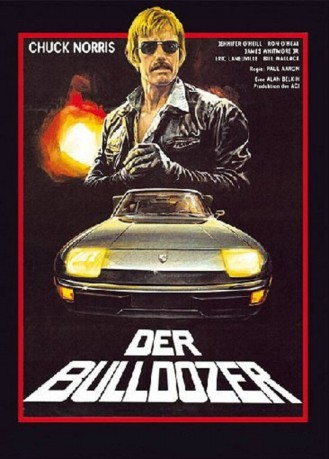

#3690 Der Bulldozer
Alternativ: A Force of One
 
 IMDB-Wertung: 5.0 / 10
IMDB-Wertung: 5.0 / 10  Metascore: 0
Metascore: 0 
Ein im Untergrund arbeitendes Team des Rauschgift-Dezernats wird von einem unbekannten Killer bedroht, der die Rauschgift-Fahnder einen nach dem anderen auf mysteriöse Weise umbringt. Die Ermordeten zeigen außer einem gräßlichen, immer wiederkehrenden Würgemal, keinerlei Anzeichen eines gewaltsamen Todes. Um die Identität des Karate-Mörders aufzudecken, bedient sich die Polizei der Hilfe des Karate-Meisters Matt Logan. Logan trainiert gerade, um seinen Titel gegen Jerry Sparks zu verteidigen. Ahnt Amanda Rust die Identität des Killers? Sie ist die Schlüsselfigur des Untergrund-Teams. Wird sie Beweise finden, um den Mörder zu entlarven? Mittlerweile hat der Karate-Mörder erneut zugeschlagen. Sein Opfer ist diesmal Logans Adoptiv-Sohn Charlie. Erst als Logan seinem bis zum letzten entschlossenen Gegner Sparks im Ring gegenübersteht, wird ihm klar, daß hier mehr auf dem Spiel steht als der Titel des Champions...
Jahr: 1979
Dauer: 90 Minuten
FSK: 16
Land: USA Studio: American Cinema ReleasingTonspuren:
Untertitel:
Auflösung: 1080p (1920x1080) Größe: 8151 MB
Genre: Action, Thriller, Drama, Krimi
Regisseur: Paul Aaron
Drehbuch: Panos H. Koutras
Soundtrack:
Darsteller:
 Jennifer O'Neill als Mandy Rust
Jennifer O'Neill als Mandy Rust Chuck Norris als Matt Logan
Chuck Norris als Matt Logan Clu Gulager als Dunne
Clu Gulager als Dunne- Ron O'Neal als Rollins
 Pepe Serna als Orlando
Pepe Serna als Orlando- Eugene Butler als Murphy
 Charles Cyphers als Dr. Eppis
Charles Cyphers als Dr. Eppis- Aaron Norris als Anderson
 G.W. Bailey als Erwin
G.W. Bailey als Erwin- Jeff Eagle als Uniformed Cop
- Mike Norris als Pizza Skateboarder
- Mel Novak als The Announcer
- Bill Wallace als Sparks
- Eric Laneuville als Charlie Logan
- James Whitmore Jr. als Moskowitz
 Clint Ritchie als Melrose
Clint Ritchie als Melrose- Ray Vitte als Newton
- Taylor Lacher als Bishop
- Lisa James als Harriett
- Chu Chu Malave als Rudy
- Kevin Geer als Johnson
- James Hall als Moss
- Rick Prieto als Rodriquez
- Donnie Williams als Josh Lawrence
- Guy Michel Messenger als Skateboard Boy
- Karen Obediear als Alice
- Stan Wells als Teenage Dealer
- Lou Tiano als Davis
- Daniel C. Mahar als Clifford
- Don Donati als Klute
- Charles B. Jenkins als Clerk
- William Myers als Alex
 Pat E. Johnson als Referee #1
Pat E. Johnson als Referee #1- Robert Barrow als Referee #2
- Tiger Lily Denette als Korean Waitress
- David Emann als Street Vendor at Arena
- Laurence Cohen als Drug Dealer
- Walter Champagne als Photographer
- Jesse Logan als Party Guest
- Susan Plumb als Party Guest
- Lana Summers als Party Guest
- Derek Cannan als Corner Man
- Jay De Plano als Corner Man
- Brian Holechek als Corner Man
- Don Pike als Corner Man
- John Robertson als Corner Man
- Carlos Valencia als Corner Man
Datei: X:\Person\Chuck Norris\Bulldozer, Der (1979, FSK16, 1920x1080).mkv seit 20.05.2016
Festplatte: HD Collection-7+mehr(A-Z)+Person
 Es gibt insgesamt 17 Filme in der Gruppe 'Person\Chuck Norris'
Es gibt insgesamt 17 Filme in der Gruppe 'Person\Chuck Norris'